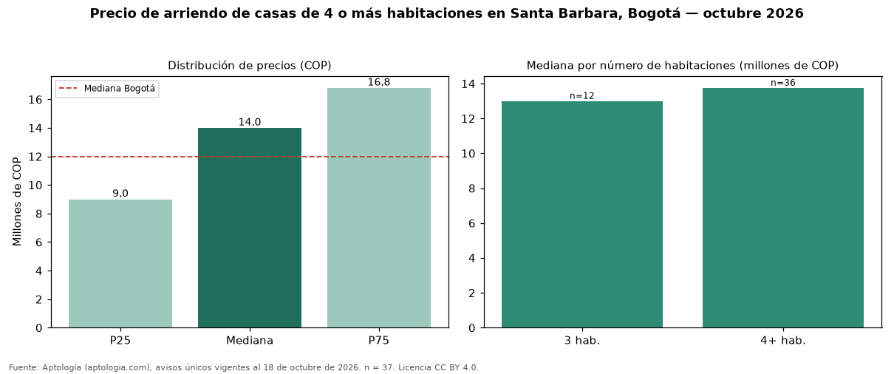

Precio de arriendo de casas de 4 o más habitaciones en Santa Barbara, Bogotá — octubre 2026
Con 37 avisos únicos analizados, el canon mediano de casas de 4 o más habitaciones en arriendo en Santa Barbara (localidad de Usaquén), Bogotá es COP 14 millones al mes. Eso la ubica 17 % por encima de la mediana de Bogotá para casas de 4 o más habitaciones (COP 12 millones). Por metro cuadrado, la mediana es COP 36.000/m² (+20 % frente a COP 30.000/m² en Bogotá). Cruzando con la oferta de venta del mismo barrio, la rentabilidad bruta implícita es de 6,6 % anual (canon por m² × 12 / precio por m²). En el mismo barrio, la mediana de casas es COP 13 millones con 3 habitaciones. La dispersión es moderada: el cuartil superior (COP 16.800.000) es 1,9 veces el inferior (COP 9.000.000). 92 % de los avisos incluye al menos un parqueadero. Datos abiertos CC BY 4.0 de Aptología; fuente y búsqueda de inmuebles: https://www.aptologia.com/casas-en-arriendo/bogota/santa-barbara. Archivos: PDF de 2 páginas, CSV con las cifras y gráfica PNG.

| Avisos únicos | 37 |
|---|---|
| Percentil 25 | COP 9.000.000 |
| Mediana | COP 14.000.000 |
| Percentil 75 | COP 16.800.000 |
| Mediana por m² | COP 36.000 |
Fuente: avisos vigentes de portales inmobiliarios recopilados por Aptología, deduplicados (mínimo 30 avisos únicos por celda). Precios pedidos, no cerrados. Fecha: 2026-10-18.